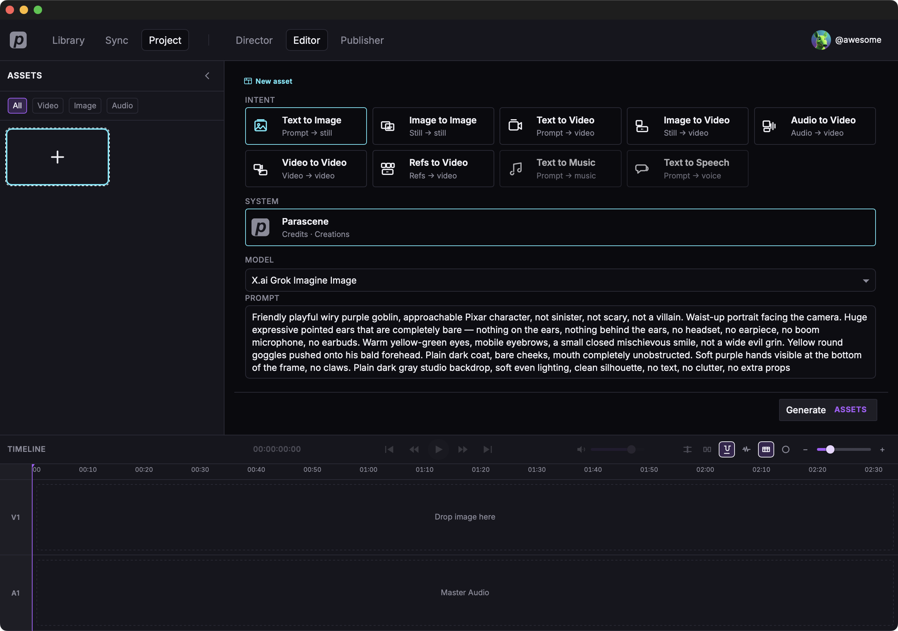
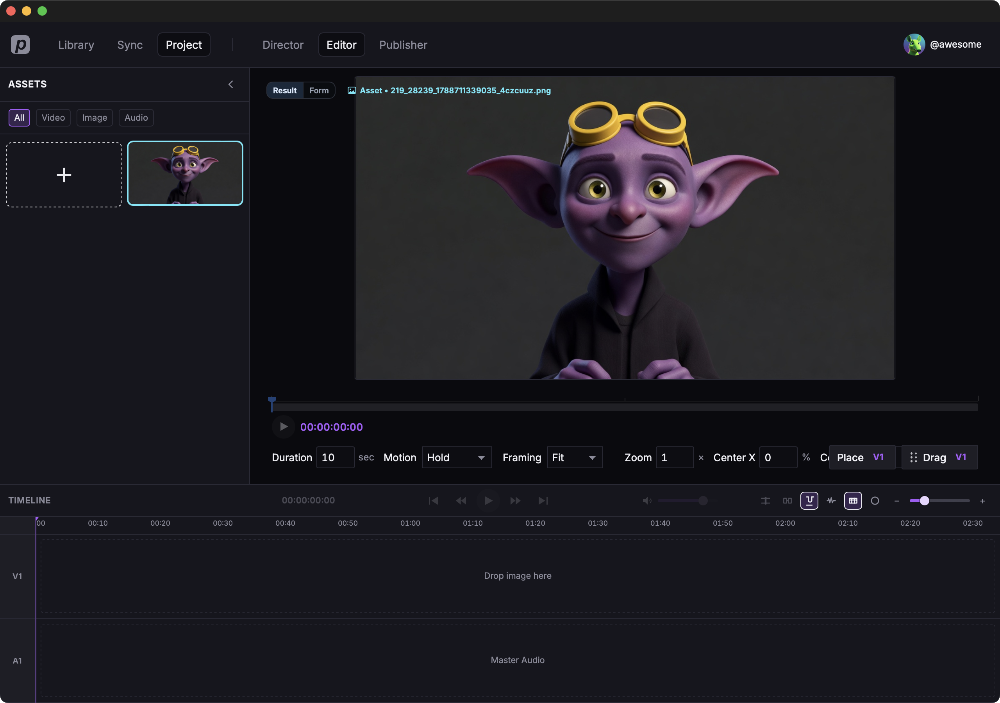

Generate an image
We'll stay in the open project and make a still of this goblin. Text to Image, Parascene, Grok Imagine.
Open Editor
- Click Editor in the top bar.
- In Assets (left), click the + tile labeled Add asset.

Text to Image on Parascene
- Choose Text to Image (Prompt → still).
- Under System, choose Parascene (Credits · Creations).
-
Under Model, pick
X.ai Grok Imagine Image. Aspect ratio is 16:9 from Director.

The prompt we used
We typed this into Prompt.
Friendly playful wiry purple goblin, approachable Pixar character, not sinister, not scary, not a villain. Waist-up portrait facing the camera. Huge expressive pointed ears that are completely bare — nothing on the ears, nothing behind the ears, no headset, no earpiece, no boom microphone, no earbuds. Warm yellow-green eyes, mobile eyebrows, a small closed mischievous smile, not a wide evil grin. Yellow round goggles pushed onto his bald forehead. Plain dark coat, bare cheeks, mouth completely unobstructed. Soft purple hands visible at the bottom of the frame, no claws. Plain dark gray studio backdrop, soft even lighting, clean silhouette, no text, no clutter, no extra props
When it finishes it lands in this project’s Assets and in Library.
What came back


Where to go from here
Generate a video with audio — same project, same goblin, a spoken file, then a short lip-sync clip.